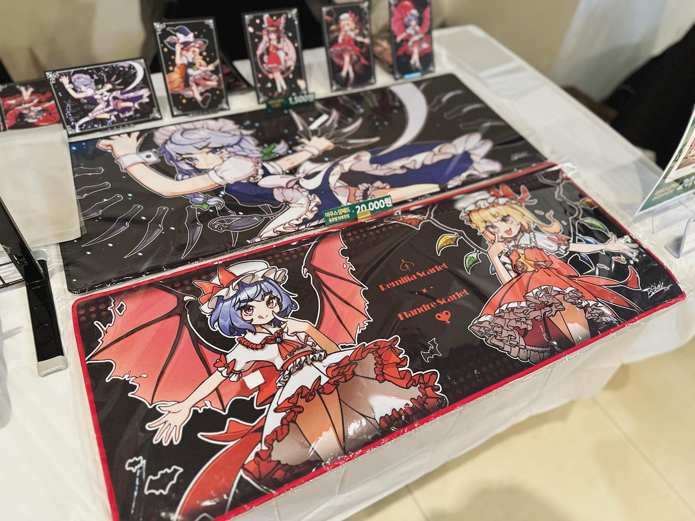
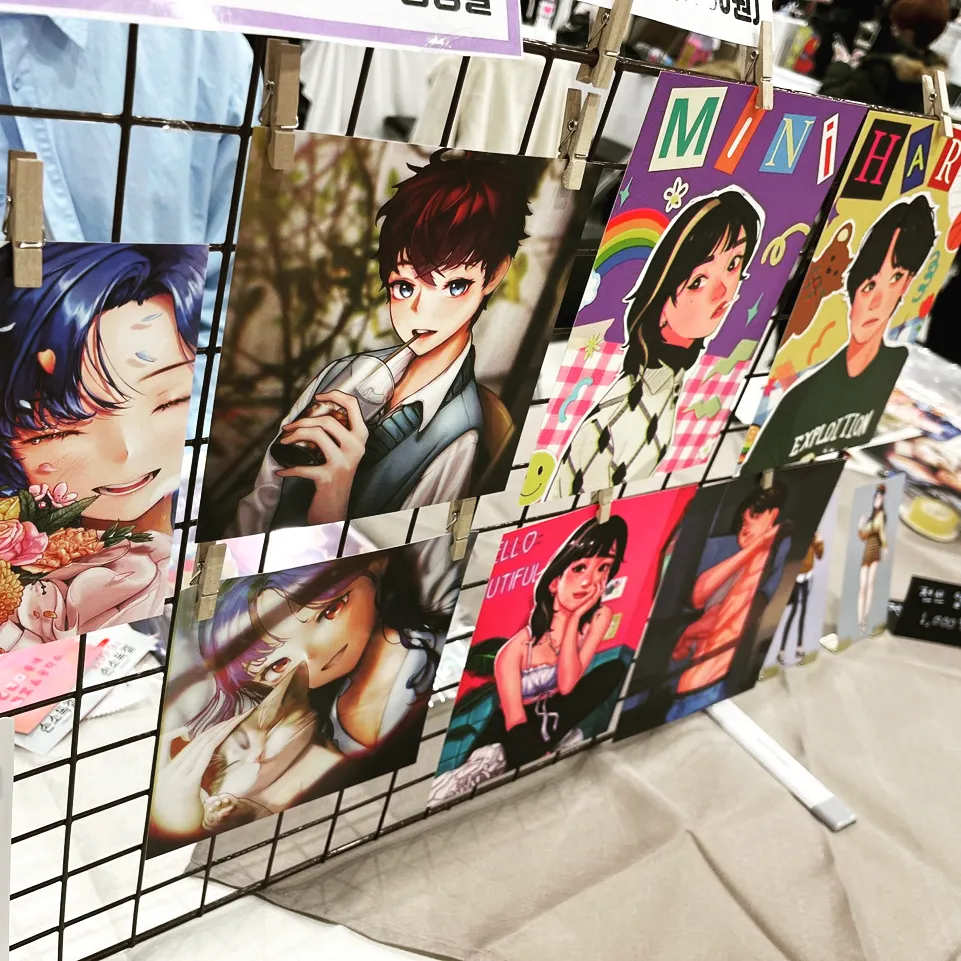
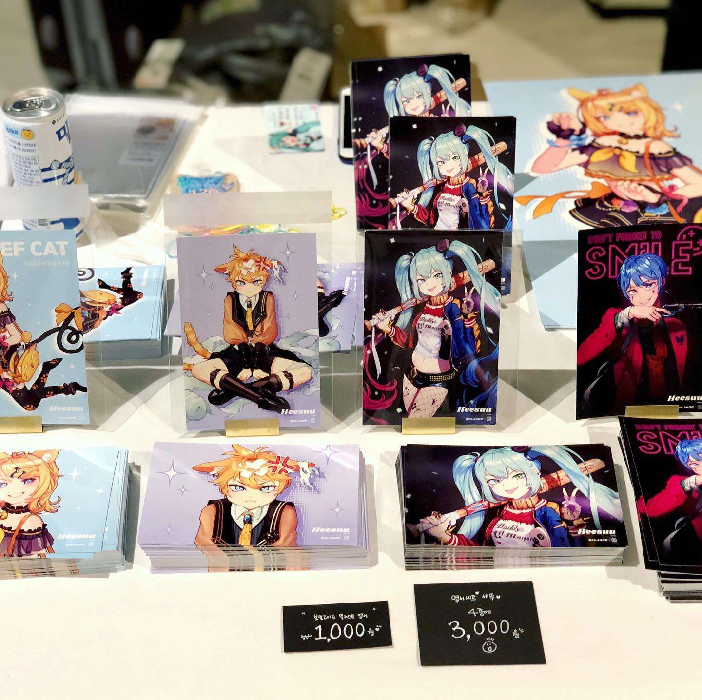

연혁
게임 개발 교육과 협업 프로젝트, 콘텐츠 제작과 매장 운영, 굿즈 행사 참여 경험을 정리했습니다.
업데이트
↔ 좌우로 드래그하거나 항목을 선택해 보세요.
교육 및 자격
- — 부터 교육
OZ GAMELAB 2기
교육·프로젝트 참여
오즈코딩스쿨·넥스트러너스의 4인 협업 프로젝트에서 UI 설계·구현과 아트 리소스 통합을 맡았습니다. 피드백을 반영한 리디자인, HUD 연동과 결과 연출을 구현했습니다.
게임랩 작업 보기 ↗ - — 부터 교육
오즈코딩스쿨 게임 개발 부트캠프 5기
게임 개발 교육
C#·Unity를 학습하며 2인·5인 협업 프로젝트를 수행했습니다. TaskTown에서는 Unity 개발 팀장으로 씬 전환·튜토리얼·공용 사운드를 구현하고 팀원이 만든 기능을 연결했습니다.
TaskTown 작업 보기 ↗ - 자격
컴퓨터그래픽스운용기능사
한국산업인력공단
- 자격
ITQ 엑셀 B급
한국생산성본부(KPC)
- 자격
ITQ 파워포인트 C급
한국생산성본부(KPC)
- 자격
ITQ 아래한글 A급
한국생산성본부(KPC)
- 자격
GTQ 일러스트 1급
한국생산성본부(KPC)
- 자격
GTQ(그래픽기술자격) 1급
한국생산성본부(KPC)
- — 부터 교육
한강미디어고등학교
산업디자인과 · 졸업
산업디자인과를 졸업했습니다.
활동
- 활동
제2회 봉래제
팀 공동 부스 · 굿즈 기획·제작·판매
라디오회관 답사를 바탕으로 상품 종류·가격대·주력 품목을 검토하고, 본인 일러스트의 제작 발주부터 현장·온라인 판매와 발송까지 맡았습니다. 팀원 SD 원화에는 피드백으로 참여하고 공동 부스에 함께 진열했습니다.

봉래제 · 본인·팀원 상품 공동 진열 - 활동
디.페스타(디페)
공동 부스 참가 · 개별 굿즈 기획·제작·판매
참가자들과 부스를 공유하고 각자의 상품을 준비했습니다. 본인 상품의 일러스트·구성·제작 발주·포장·현장 판매를 직접 진행했습니다.

디페스타 · 공동 부스 참가 기록 - 활동
피아프로 스타즈 온리전
첫 오프라인 행사 · 굿즈 제작·현장 판매
일러스트 굿즈를 준비해 처음 오프라인 행사에 참가하고 현장에서 판매했습니다.

피아프로 스타즈 · 첫 행사 참가 기록
근무
- — 부터 근무
빽다방 신림대학점
매니저
매장과 스태프를 관리하고 근무 스케줄을 조정했습니다. 물류 발주와 음료 제조를 함께 맡았습니다.
- — 부터 근무
투썸플레이스 아름제일여성병원점
매니저
고객 응대와 음료 제조, 매장 스태프 관리를 담당했습니다.
- — 부터 근무
광진구청 홍보담당관
PR전문 웹툰크리에이터
뉴딜일자리사업에 참여해 주민 편의·문화·축제 등 구청 사업의 안내 사항을 웹툰으로 구성했습니다. Photoshop과 Illustrator로 홍보용 캐릭터 일러스트도 제작했습니다.
- — 부터 근무
샐러디 보라매점
사원 - 제조·고객 응대
샐러드 제조, 고객 응대와 물류 정리를 담당했습니다.
- — 부터 근무
젤라띠젤라띠 홍대 본점
사원 - 오픈·판매
매장 오픈과 판매를 준비하고 젤라또를 판매했습니다. 에스프레소 추출과 블렌더 음료 제조도 맡았습니다.
- — 부터 근무
던킨도너츠 교대법원점
사원 - 음료·베이커리 제조
커피와 간단한 베이커리를 제조하고 매장을 정리했습니다. 재고의 유통기한과 보관일을 관리했습니다.
- — 부터 근무
강남 메가존 클라우드 카페
사원 - 음료 제조·매장 관리
커피 추출·판매, 우유 스팀과 블렌더를 이용한 음료 제조, 매장 관리를 담당했습니다.
- — 부터 근무
열린아트
외주 작업 - 일러스트 디자인
항공기 비상안내도 브로슈어의 일러스트를 디자인했습니다.
- — 부터 근무
짱닭치킨 봉일시장점
사원 - 매장 아르바이트
POS 조작과 서빙, 청소와 진열 정리를 담당했습니다.